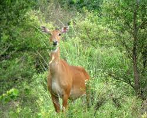
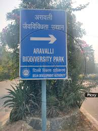
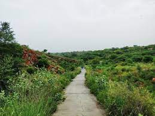

  
Aravali diversity-bio Park, Gurgaon, (or Aravalli Biodiversity Park, Gurgaon) spreads over 153.7 hectares, near the Guru Dronacharya metro station in Gurgaon, Haryana, India. The park, contains ecologically restored and semi arid land vegetation. The park was opened to the public on World Environment Day, 5 June 2010.[1] The park includes a number of trails and a native plant nursery and interpretive displays at the entrance.The natural vegetation of the park falls within the Northern Tropical Dry Deciduous Forest (including Anogeissus pendula and Boswellia forest edaphic sub-types) and Northern Tropical Thorn Forest types recognised by Champion and Seth.[2] The park has over 300 species of native plants, including a large number of arid region lithophytes. Over 185 bird species are reported from the park, which is an eBird hotspot.[4] A recent study found a wide variety of native birdspecies using the park, with ecologically restored areas showed higher encounter rates of birds than unrestored areas with weeds[5] Reptiles like Bengal monitor and mammals like northern or five-striped palm squirrel, nilgai, golden jackal, Indian hare,common palm civet, and Indian grey mongoose, are found in the park. The site where the Aravali Biodiversity Park, Gurgaon, is located had many mining pits operating during the 1980s and 1990s, and also a stone crushing zone with eight active crushers. Mining and stone crushing came to a halt after a Supreme Court ban in 2002, implemented only since 2009. The mining activities and other disturbances had resulted in barren hill slopes, a deep water table, and poor soil cover. The remnant forests on the site were highly degraded and invaded by Prosopis juliflora (locally known as vilayati keekar or baavlia). In 2010, a group of concerned and passionate citizens called 'iamgurgaon',[6] consisting of Latika Thukral,[7] Swanzal Kak Kapoor, Aman Kumar, Gayatri Singh and the Late Atal Kapoor took up the initiative of ecological restoration of the Aravali Biodiversity Park, Gurgaon. They hired ecological restoration practitioner Vijay Dhasmana to restore the damaged landscape in 2011. Thereafter the vision was revised to bring back the original Aravali forest vegetation of the region. Seedlings of about 200 native plant species were raised from seeds collected from remnant natural forests and vegetated areas in Mangar, Nahargarh, and Kumbhalgarh in the Aravalli Range. Invasive alien species such as Prosopis juliflora were carefully removed and native plants of the Aravalli Range were planted. These included native species such as Boswellia serrata (local name: salai), Sterculia urens (kullu), Anogeissus pendula (dhau), Holarhenna pubscens (indrajao), Mitragyna parvifolia (kaim), Wrightia tinctoria (khirni), Commiphora wightii (guggul), Helicteris isora (marodphali), Albizia odorotissima (kala basa), Mallotus philippensis (sinduri) and many others. A large part of seedlings planted were watered through drip irrigation. The Park also maintains a variety of habitats including grasslands and a seasonal pond near an old quarry site.